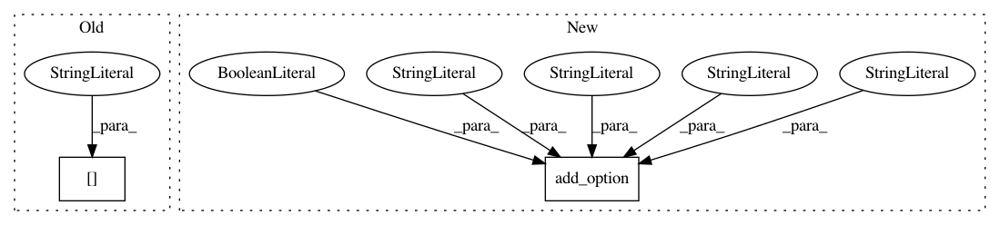

6d7cc6e2fecade5cd9a66ab29452131dcb1d618e,bin/basenji_sad_ref_multi.py,,main,#,46
Before Change
default="%s/data/hg19.fa" % os.environ["BASENJIDIR"],
help="Genome FASTA for sequences [Default: %default]")
parser.add_option("-g", dest="genome_file",
default="%s/data/human.hg19.genome" % os.environ["BASENJIDIR"],
help="Chromosome lengths file [Default: %default]")
parser.add_option("--local",dest="local",
default=1024, type="int",
After Change
parser.add_option("-f", dest="genome_fasta",
default="%s/data/hg19.fa" % os.environ["BASENJIDIR"],
help="Genome FASTA for sequences [Default: %default]")
parser.add_option("--flip", dest="flip_ref",
default=False, action="store_true",
help="Flip reference/alternate alleles when simple [Default: %default]")
parser.add_option("--local",dest="local",
default=1024, type="int",
help="Local SAD score [Default: %default]")
parser.add_option("-n", dest="norm_file",
In pattern: SUPERPATTERN
Frequency: 3
Non-data size: 2
Instances
Project Name: calico/basenji
Commit Name: 6d7cc6e2fecade5cd9a66ab29452131dcb1d618e
Time: 2019-08-23
Author: drk@calicolabs.com
File Name: bin/basenji_sad_ref_multi.py
Class Name:
Method Name: main
Project Name: calico/basenji
Commit Name: 98b1fe8f5c1acccb31c10028bccaa797470279d2
Time: 2019-08-23
Author: drk@calicolabs.com
File Name: bin/basenji_map.py
Class Name:
Method Name: main
Project Name: calico/basenji
Commit Name: 9a84af78d5b9039e794973b79db0ee0d516e6641
Time: 2019-04-16
Author: drk@calicolabs.com
File Name: bin/basenji_sat_plot.py
Class Name:
Method Name: main